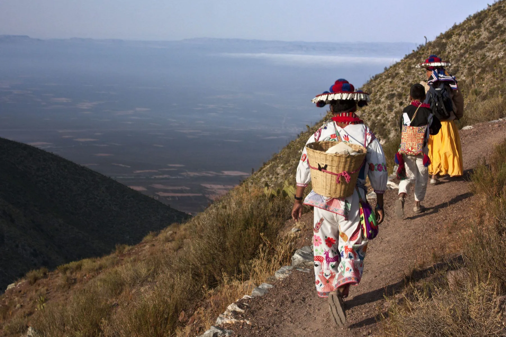
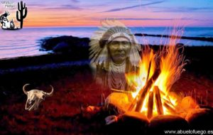

Los huicholes, o wixaritari, han habitado la Sierra Madre Occidental durante siglos. Se cree que
descienden de antiguos pueblos mesoamericanos que migraron a estas regiones montañosas para escapar
de la influencia azteca y otros imperios. A pesar de la colonización española, lograron conservar su
cultura, religión y territorio gracias a su ubicación remota y resistencia comunitaria.
Los huicholes habitan en los estados de Nayarit, Jalisco, Durango, Zacatecas y San Luis Potosí.
Sus principales comunidades son:
Comunidades |
|
|
 |
Actualmente, hay alrededor de 50,000 huicholes, y aunque algunos han migrado a ciudades en busca de mejores oportunidades, mantienen un fuerte vínculo con sus comunidades de origen.
La cultura huichol es profundamente espiritual y simbólica. Su cosmovisión gira en torno a
la relación con la naturaleza, el peyote y los dioses. Sus prácticas religiosas, vestimenta
y arte reflejan su visión del universo.
Vestimenta
Su vestimenta es colorida y bordada con símbolos sagrados. Los hombres visten camisas y pantalones
blancos bordados, sombreros adornados con plumas y chaquiras. Las mujeres usan faldas largas con
blusas bordadas y rebozos coloridos.
Los huicholes son politeístas y creen en la interconexión de la naturaleza y el espíritu humano.
Principales deidades |
|
|  |
|
El idioma wixárika, conocido comúnmente como huichol, es la lengua tradicional del pueblo huichol y forma parte de la familia lingüística uto-azteca, dentro del grupo corachol. Es una lengua viva y activa, hablada por la gran mayoría de los huicholes, principalmente en comunidades de la Sierra Madre Occidental en Nayarit, Jalisco, Durango, Zacatecas y San Luis Potosí.
Caracteristícas del Idioma Wixárika |
|||
|
|
||
El wixárika no solo es un medio de comunicación, sino que también es un vehículo de la
cosmovisión huichol. Muchos conceptos religiosos y espirituales no tienen una traducción
exacta al español, ya que están profundamente ligados a su tradición y mitología.
El idioma es crucial en los rituales y cantos sagrados, como en las peregrinaciones a Wirikuta
o las ceremonias del Hikuri (peyote). Los marakames (chamanes huicholes) utilizan el idioma en
oraciones y cantos para conectar con los dioses.